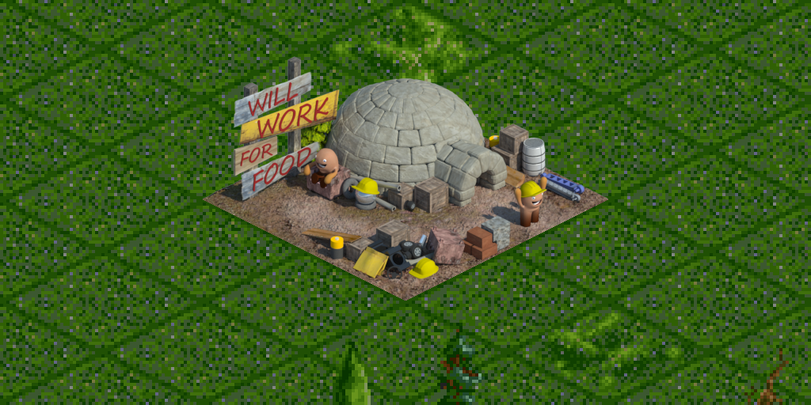

BRIX 0.0.2 is here!
Hello dear humans and inhabitants of slug planet, today I have great news to share with you as I have finished work on my graphics replacement NewGRF – BRIX version 0.0.2 . As BRIX 0.0.1 article was quite short due to being released in a rush, this one is going to go into a lot more depth.
What is BRIX?
BRIX Realism Is XXXX is purely visual graphics replacement NewGRF aiming to add 32bpp and x4 zoom level graphics to the game, while maintaining compatibility with 8bpp graphics. BRIX does not and will not do any changes to functionality – that way you can load it as a static NewGRF. Static NewGRF means you are using it as a base set add-on, and you can use it locally even when joining multiplayer servers, without the server actually enforcing the NewGRF to be used by all users. Learn how to use a static NewGRF here. You can find BRIX repository at the openttdcoop devzone project page.

You can customize which parts of the game should BRIX replace by parameters, which is especially useful when you for example get used to the train signals, and want to use those on all servers. Then you would just use a static NewGRF with only signals enabled.

BRIX is available for download on OpenTTD’s download content server through the game.
You can download various reduced versions of BRIX – without extra zoom or 32bpp, in case you want a lightweight version. The official BaNaNaS release is full 32bpp / extra zoom though. Even there you can still force 8bpp blitter through OpenTTD config file.

Along with BRIX I release a standalone 32bpp->8bpp png conversion script I call RGBA EATER, I will mention more about that further down below but you can find more info about it here.
Why?
The main purpose of BRIX is to create a 32bpp/EZ NewGRF, which would be visually compatible with other 8bpp NewGRFs.
32bpp vs 8bpp conflict
Ever since 32bpp/EZ exists in OpenTTD, each of 32bpp/EZ projects arrives to the same problem. People start using it, they declare they would like to have everything in 32bpp/EZ, and then they switch back to 8bpp NewGRFs because they refuse to throw away all the years of 8bpp content that there is available.
The big problem is that even if a 32bpp/EZ set was done excellently well, people would always want to return to their favourite train/industry/… sets in 8bpp. Reworking all NewGRFs into 32bpp is outright insane as that would be both too much work, not every author would like to do it, and the results might not even be visually better.
That’s why I believe it is essential to develop a 32bpp/8bpp NewGRF not as a superior replacement, but as a complementary thing to other 8bpp NewGRFs.

There are two sides of 8bpp compatibility to look at, one of them being purely visual, and one of them being functional. Visual side is that it either looks reasonable together or it doesn’t, I will describe that later. The functional part would mean that the 32bpp/EZ NewGRF provides proper 8bpp sprites. As you might be aware, 8bpp sprites are a mandatory part of every NewGRF, and 32bpp/EZ sprites are just an extra, an alternative.

However, converting full RGB to 8bpp is not as easy as it might seem at first thought, and most sets get to ignore it completely or provide really broken graphics.

The best case is when the NewGRF has always been 8bpp (zBase, NUTS, …) so it already has all 8bpp hand-drawn sprites, but obviously that is only the case for older NewGRFs, new projects are very unlikely to draw both 8bpp/x1 pixel art, and render or paint 32bpp/x4 pictures.
This lead me to writing my own python script I call RGBA EATER, which does the 32bpp -> 8bpp conversion for me, and I am sharing it so that any other 32bpp project can make use of it.
The RGBA EATER alone is a gigantic step forward for me. Not only it is a tool which totally redefines the problem of 8bpp conversion for me, but I also spent almost a month writing it and learned many new things about Python.
You can find more info about RGBA EATER here.
Available base sets
I have always been a big fan of TTD’s original graphics from 1998 by Simon Foster. To this day I firmly believe that it’s an absolute masterpiece. When I started drawing NUTS several years ago, TTD original graphics were my main source inspiration for pixel art techniques. The deeper I looked, the more I liked it.

On the opposite side, I find OpenGFX and zBase both have major visual issues. With all respect i have for Zephyris putting so much work into making them, OpenGFX I don’t consider great, but it does it’s job – ability to redistribute fully functional OpenTTD as open source. With zBase I thought 32bpp/EZ is just a bad concept but I was always intrigued if that’s really the case so I was trying to identify the problems…

There are many issues, suddenly everything looks bland, dead and without personality, totally unlike the vibrant TTD pixel art.
On the first look you can say “well 32bpp is just more colours, how can more colours break anything, and ability to add pixels is obviously better?”.
It’s not an easy problem to grasp properly. In my eyes, first of all looking at x1 zoom makes you imagine the rest of the details you can’t see in the pixels, assuming they are there. However if you make the same picture with 16 times the amount of pixels, you really need to have a lot more detail there, otherwise our eyes can see that there is no details and they can’t be fooled into trying to imagine the detail because they know it isn’t there.
The second half of the coin, 32bpp, is actually much harder to draw consistently than in the indexed colours. The palette is a great ruleset for all NewGRF authors – as long as everyone “obeys” the colours of the palette, everything looks relatively compatible. With the freedom of 32bpp comes a lot of danger because of this.
Another issue I think comes more from the way how the graphics are made – if you want to make 32bpp/EZ graphics, it starts being very appealing to use 3D modelling software. That typically completely removes the human touch on every pixel that pixel art has in extreme levels. Especially since orthographic rendering can be very inconsistent in rotations and have other weird issues, it’s vital that the sprites at least go through Photoshop for careful postproduction.
Trying it myself
After some time of rejecting 32bpp/EZ, I made YETI Extended Towns and Industries which made me want to try to replace the terrain for the industries to match with. Eventually I started attempting to make a “base set style” NewGRF with RAWR Absolute World Replacement, but it did not have this mindset of 8bpp compatibility, and RAWR’s 8bpp mode was basically utterly broken (about as bad as BRIX 0.0.1). After a long time of working on it, I abandoned the project mainly because of these conflicts, apart from the workflow getting stupidly complicated by attempting to replace all 4 climates with unique graphics.

BRIX is the successor of RAWR, but this time focusing mainly on 8bpp and x1 zoom compatibility, quality over quantity, and clarity.

Finding BRIX style
Figuring out how to do things technically can be challenging but step by step you can relatively easily find solutions. When something doesn’t work for you, it’s quite clear. However finding the style of how should something look is a whole different story that doesn’t have clear answers and finding what BRIX 0.0.2 is today has consumed a lot of brain cells and time. Here I am going to attempt to describe at least some of the paths and how I arrived to the concept of BRIX as version 0.0.2 is today. I hope you can see some difference between the following two pictures:


Focus on large-scale gameplay
As many of you know, I have been a big part of a community known as openttdcoop, based around building giant train networks. All of my NewGRFs are obviously targeted mainly at this group of people as it’s basically a reflection of how I perceive the game and how I personally play(ed) it.
When looking at the large track mazes and tangled constructions, it is massively helpful to be able to distinguish every type of signal, state of the signal, have track graphics work properly, clearly see slopes/elevations, and so on. Most of the time we spend in x1 zoom because we can’t see enough things in x2 / x4, however for people with high pixel density displays x2/x4 becomes very useful.

All of this I am trying to reflect in BRIX by all of the designs being very clean and clear, having only the amout of info you really need. The rail signals are a typical example. Even though they are a bit too monolithic and massive to me, they clearly show their type and state even at x1 zoom and the big gray structure works as a margin so the lights are even more visible. And as we all know, train signals are one of the most important things in this game to see and understand.
Ultra-clean style vs. textures/noise
RAWR was relying on textures in an extreme way – most of the models were flat surfaces with textures defining a lot. This made it look attractive (doesn’t have to mean good) with relatively little effort, if you ignored tiling issues and generally ugly patterns. But these issues were really noticeable when building because rails are very susceptible to imprecisions. Obviously I wanted to fix it, but unfortunately this whole texture-based approach made it very hard to improve and generally caused the whole workflow to become very messy.
So the obvious outcome was that I tried to start a new project – BRIX – and set an opposite extreme aim for myself to not use any textures at all. This trend lasted until BRIX 0.0.1 but after playing with it for a little while I realized that the clean look is just boring and lazy from me. It’s not just that but I also find that my eyes would hurt more after looking at it for not too long period of time as they would unsuccessfully search for little details to observe.

How long did your eyes comfortably stay on the left and on the right? Apart from being boring, ultra clean style also makes many things much harder. If everything is noisy and organic, you can’t really tell if the tunnel, tree or anything else is geometrically precise and your eye can get tricked much easier. Since many things in OpenTTD are just visual hacks, like tunnels having fake height, adding noise helps a lot – not just by looking better overall, but with hiding problems.
I also find that the noise brings some more visual resemblance to original x1 TTD graphics which I really like.
Colours
One of the original BRIX concepts was an attempt to make a hierarchy of saturation. Less important things for the gameplay would be desaturated, while the more critical things would be very rich in colour.
Today this concept has matured to be less extreme than the initial tests, but this logic still stays. There has been a lot of experimentation and talking to other people about the colour of grass for example. The question is, what meaning does grass have? In this game it’s just an empty canvas for us to build things on. To convey the information of emptiness and hint to fill it with things, I am fairly confident about the decision to make grass in grayscale. Later on I also realized that it makes it extremely friendly with 8bpp conversion as the palette has a lot of grayscale shades.

One of the reasons why I abandoned white grass was that it started to be rather hard to define the colour of snow. In the end, the logic of snow/desert to me is that it already has some impact on the game, so giving the feeling of snow/desert is meaningful. That makes snow get a cold blue, and desert a hot orange as you would probably expect. Water is blue but not too bright as it is not very important, it mostly just means an obstacle aka “hole in the empty canvas”.
Terrain variety and trees
It is not easy to give variety to OpenTTD’s terrain. This is mostly caused by every slope of a tile only having one sprite without any random variations. The only random effects are rough tiles, rocky tiles, and trees. For various reasons BRIX mostly omits rough/rocky tiles for now so the only random variety is trees.
BRIX 0.0.1 had white trees which didn’t look that great, with 0.0.2 I did a lot of experimentation and arrived to generally desaturated trees from the ground, getting more colourful at their tops to give some sense of height, especially since BRIX trees are very small compared to original TTD/OpenGFX trees. Trees only give terrain variety when you can see them – and most large-scale builders hit X all the time to hide things they don’t want to see. Making them smaller motivates the player to hide them less I hope, and that way get a nicer view more often.

Absence of proper trees were also one of the main reasons why BRIX 0.0.1 was not very nice to use with other than temperate climates (it wasn’t really nice with temperate either, but well…), defining all trees in all climates is massively helpful for 0.0.2 to even resemble a complete product.
Gridlines
I used to like terrain without grid lines because it seemed more natural in some way, but from BRIX 0.0.1 it removed even the last piece of detail that the terrain could have..I find grid lines also help to see the elevation slopes of the terrain as brighter/darker tiles don’t have to be enough sometimes, especially if you have a lot of things on your screen. Overall it just makes it harder to navigate and guess proportions of areas so I am returning to a visible grid in all ground tiles since the purpose of BRIX is functionality.
Graphics production workflow
The basic formula for the pipeline of BRIX is a 3D model being rendered in a 3D application, and the pictures processed by After Effects.
Most people don’t understand why do I use After Effects for post production but this is the place where I make sure that all things are systematically correct in a re-renderable, automated manner with the interface of a graphics program.

BRIX 0.0.1 is a perfect example of how the outcome of this looks. A basic, but systematically working thing. Careful grouping, instancing, referencing and material management along with V-Ray’s rendering rendering possibilities in 3DS Max made for a robust and rather editable 3D environment. In tandem After Effects organizes the renders so that things which should look exactly the same, look exactly the same. For example straight rail and straight rail overlay for junctions are exactly the same because the overlay is just a cut out from the straight rail tile, and so on.

There are various issues with this workflow but the biggest issue is the aforementioned lack of human touch and detail. Tunnels don’t have enough contrast, terrain looks empty. Masking is done by vector masks which feel sterile and for complex masking tasks like tunnels insufficient. Apart from that, controlling scaling algorithm in After Effects is basically impossible.

Since I have been using a Wacom Intuos tablet for Factorio ever since I started working on it, I started to realize how important it is to edit sprites with Photoshop, and eventually I tried the same with BRIX. The effects were massive as I finally had precise control over how the sprite looks. I was so in love with it that I even bought a Wacom MobileStudio Pro in order to get the direct screen-pen-tablet experience and since then I am not even considering working without it.

Originally it all started with 3DS Max for the models but I have completely switched to Blender mainly due to us using it at Factorio and I don’t even want to install 3DS Max on my computers anymore.

The main benefits of Blender for me are for example the quick modelling, ability to make complex python scripts for custom rendering systems, reasonable material management and extremely easy GPU usage – in Max I always rendered on CPU which took forever, with Blender I just throw a 1080Ti at it and it just does the job fast, without any complications.

The fact that I don’t even have 3DS Max anymore made a big restriction to making BRIX 0.0.2 – I couldn’t re-render 3D files without it anymore, so all the improvements you see in 0.0.2 are coming from After Effects and mainly hand painting in Photoshop. And the trees are from Blender.

To make this even remotely possible to happen, I am very happy that when I was working on the 3D models, I learned from RAWR that it is critically important to do things properly right away. Everything has to tile perfectly from the beginning and so on. This majorly influences the design of tracks for example – each track type in BRIX uses a different technique which fits it’s look in order to make it tile in junctions correctly. What all this means is that I don’t even need to re-render the 3D files because they don’t need fixing, I just needed to make things look better. In case of RAWR I constantly had to revisit the 3D scene and just iterate on solving the same problems over and over again, which really slows down the progress.
This means that overall BRIX is not trying to replace too many things too fast, but the things it replaces, it does quite properly.
Eventually even my standard After Effects + Photoshop combination wasn’t enough mainly for tunnels so I just had to export everything to Photoshop and just do manual magic there. This makes the current results much better but future revisiting will be much harder because now it’s a multi-step process where After Effects needs to generate some files for itself and grab some other things from Photoshop to render the last step.
Future of BRIX
Because of the last part of the process, I will probably try to avoid re-visiting the existing sprites in future versions. If I find the energy and time to do anything with BRIX, I will rather move forward and replace something else like industries or train stations. When that is going to happen however, I don’t know. I will definitely take a break from BRIX for a while because in the last year I have been working quite intensely on it (mainly the last 4 months), and it’s been really long and exhausting.
Conclusion
It has been almost seven months since I released BRIX 0.0.1. I did so because I felt like I’m not making enough progress with it to be holding it just for myself while others wanted to try it. It made me so embarassed by the poor quality of it that it actually motivated me to do something about it.
A few months after the release I started to spend a lot of my free time with it and slowly, step by step, I eventually brought it to the current state.
Right now I am quite satisfied with how it looks, although many things could obviously look much better. There is a point where I feel like it’s stable enough to be released and more effort is just tedious self-torture, and that point is pretty much now. I could add rough and rocky tiles, add nicer bulldozed tiles, add depots, train stations, track electrification, finish vehicles, … , and the list just continues. For now I call this rather proudly BRIX 0.0.2 .
There have been many points where I am just asking myself “Why do I even do this?”. The force that is driving me is the vision that when I look back what I did in the last year in my free time, I see product of it, and even better a product which shows that I have learned many things when making it. And the learning part is the most important part for me which lets me justify why do I do this. Working on NewGRFs for OpenTTD made me learn a sea of things I would have normally never known about and eventually gave me enough to be able to give me a dream job to work on Factorio. Every single thing I learned here I utilize there, and Factorio makes me learn many things again, you see the pattern 🙂 .

All of this isn’t just because of some games, it’s all because of the people. I didn’t just learn all of the things by myself, even if I went through all of the solutions personally. I have to thank everyone who I talked to for teaching me so many things…
From any forms of visual concepts and overall artistic enlightenment that Albert ‘glex’ Bertolin from Factorio teaches me, through discussing many not only visual and python-y problems with andythenorth, me asking dumb programming-related questions to all the wonderful programmers such as frosch or Alberth, and programmers in Factorio such as Martin ‘HanziQ’ Hanzík or Michal ‘Posila’ Pavel?ík. I have to thank planetmaker for all the wisdom he has told me about general workings in OpenTTD, all the things about licensing and over all guidance, even though it has been a while I come to appreciate it more and more as I discover and realize many of the problems by myself. Last but not least, I would like to thank everybody who has ever discussed anything related to my NewGRFs in the past, be it in IRC or tt-forums, or anywhere else, especially Mark, Jam35 and Sylf for being great members of openttdcoop. Lukasz1985’s words about “you will want to use python” are in the back of my mind constantly ever since I started making extensive use of Python, or SyberSycho and R2T9 who have faithfully followed the tt-forums thread over the long period of time and showed interest in the project, which in turn made me motivated to continue working on it. I thank you all, for without you I would not even be interested in working on a project like this.

In the past I have been working on multiple sets at the same time, considering all of them a work in progress. Many years ago I could afford to do that with the amount of free time I had, but we all get older and pretend to get wiser, so it’s time to realize that I can only really keep one project at most so the slow progress doesn’t dissipate entirely.
Even though one of the biggest benefits of BRIX is the lack of any functionality since it’s just a graphics replacement, it’s also one of the things I miss. The kind of functionality that I was able to create in NUTS Unrealistic Train Set, making OpenTTD a game with even more possibilities.

Some of you might remember I was experimenting with a few new train sets, but none of them was ever released or even seriously started past a stage of concept and experiments.
In the last few years I have been thinking and dreaming about a train set which would learn from some of NUTS’s flaws, yet give even more interesting experience. I am happy to announce that with BRIX being stable for now, I will be focusing on making a new train set.
Categories: Community News
Erki October 25, 2017 22:09
Hello, I really like your maglev digital blue line. But when two diagonal tracks are crossing, it builds vertical/horisontal tracks allso, but blue line is turned off. And many other crossings and junctions allso the same thing. Some more tricky junctions are hard to understand in this way, like in your last picture. When I look PSG #326, this is all over the place. Is there reason to build tracks without blue line?
Alex November 11, 2017 19:24
oh my god! It is so cool!!! Great work! Long time no play OpenTTD, but i see amazing visual concept and I want to play right now!
V453000 November 12, 2017 10:09
Erki, thank you for your feedback, it is intentional as I believe the difference is quite clear where is a track and where isn’t … I even made a whole another set of graphics for PURR based on those maglev tracks … maybe some of the colour variations found there would be more clear for you?
Nondidjos November 19, 2017 14:51
outstanding work, someone give this man a raise, even if 0+0 is still = 0 😛
Mark March 8, 2018 13:25
Great work, after trying many trainsets NUTS was my favourite. So i’m delighted to find out that the creator is making a complete new graphical overhaul.
valis August 31, 2019 07:15
Úžasní lidé d?lají jen úžasné v?ci a tady to platí dvojnásob. Skv?lá práce V453000, jen tak dál a díky 🙂